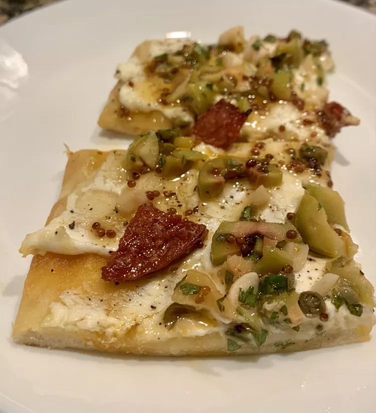

Lasagna

Ingredients
- 1 container ricotta cheese
- 1 package shredded mozzarella cheese
- 1 package Parmesan cheese
- 1 egg
- 2 teaspoons Italian seasoning
- 1 pound sausage
- 1/2 jar marinara sauce
- 6 flatbread
Directions
- Preheat oven to 190 C / 375 F
- Combine ricotta cheese, 1/2 of the mozzarella cheese, Parmesan cheese, egg, and Italian seasoning in a bowl
- Cook sausage in a skillet over medium heat until no longer pink, 5 to 10 minutes; drain. Stir in marinara sauce
- Spread 1/6 of the cheese mixture evenly on each flatbread; cover with sausage mixture. Top with remaining mozzarella cheese
- Bake in the preheated oven until cheese is melted and bubbly, 10 to 15 minutes